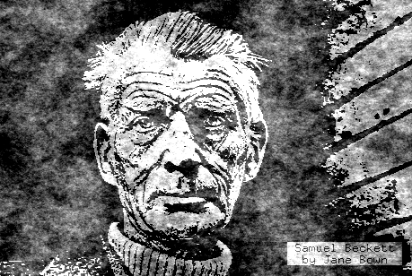
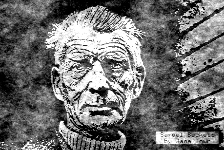

Everybody knows about the random phase noise: you keep the power spectrum of an image and randomize its phases. You obtain an image that has the same ``texture'', but a completely randomized geometry. You cannot recognize any object.
fft 1 i/barb.png |plambda "0 rand join cexp cprod" |fft -1 - barb-rpn.png
 {\small\tt barb.png}\\
{\small\tt barb-rpn.png}
{\small\tt barb.png}\\
{\small\tt barb-rpn.png}
What happens if you do the opposite? Keep the phases and randomize the amplitudes? Well, you lose all kind of texture but all the objects are recognizable among the very spiky noise.
fft 1 i/barb.png|plambda "dup vnorm / randu *"|ifft|qauto -i -p 1 - barb-ran.png{\small\tt barb-ran.png}
In fact, setting the amplitudes to uniform random is more or less the same thing that setting them to a constant; the visual effect is very similar, but with less noise. This is called the phase image, because it is obtained by throwing away all amplitude information (but not randomizing it) and keeping only the phases. It looks very different than the original image, more or less like a laplacian.
fft 1 i/barb.png |plambda "dup vnorm /" |ifft |qauto -i -p 1 - barb-pha.png
 {\small\tt barb-pha.png}
{\small\tt barb-pha.png}
The phase image looks very strange because it has a flat spectrum, which is a very unnatural spectrum to have. Typically, the spectrum of images decays with the inverse of the frequency. Imposing this decay, instead of a flat spectrum, we obtain the so-called {\em canonical image}:
fft 1 i/barb.png |plambda "dup vnorm / :R /" |ifft |qauto -i -p 1 - barb-can.png{\small\tt barb-can.png}
This image is eerily similar to the original. It looks like a noisy version of the original, but the noise is not white. Interestingly, this noise has been produced without any use of random numbers! We can call it the canonical noise of the image. This works even with binary images:
fft <i/binbeck.png|plambda "dup vnorm / :R /" |ifft|qauto -p 9 - binbeck-can.png
 {\small\tt binbeck.png}\\
{\small\tt binbeck-can.png}
{\small\tt binbeck.png}\\
{\small\tt binbeck-can.png}